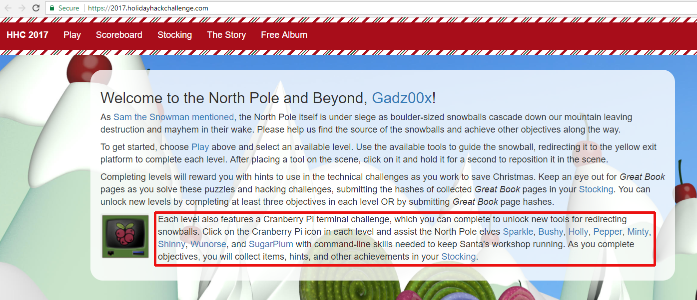

Each terminal contains a Linux command line puzzle to solve, which unlocks additional hints and tools for use in the game. To access the terminals, find and click on the terminal icon on each level of the snowball game. Tips are found in the elves tweets, which are all linked at the 2017 Holiday Hack Challenge webpage.

Troublesome Process Termination
Found in Winconveivable: The Cliffs of Winsanity
Using the familiar "kill" command will not work inside this terminal because someone has aliased the command to the "true" command, which for all intents and purposes, return the user to the command prompt without doing anything.
Solve this terminal challenge by specifying the full path to the kill command, which is /bin/kill.
___,@
/ <
,_ / \ _,
? \`/______\`/
,_(_). |; (e e) ;|
\___ \ \/\ 7 /\/ _\8/_
\/\ \'=='/ | /| /|
\ \___)--(_______|//|//|
\___ () _____/|/_|/_|
/ () \ `----'
/ () \
'-.______.-'
jgs _ |_||_| _
(@____) || (____@)
\______||______/
My name is Sparkle Redberry, and I need your help.
My server is atwist, and I fear I may yelp.
Help me kill the troublesome process gone awry.
I will return the favor with a gift before nigh.
Kill the "santaslittlehelperd" process to complete this challenge.
elf@f01d4a44948a:~$ ps -ef
UID PID PPID C STIME TTY TIME CMD
elf 1 0 0 04:19 pts/0 00:00:00 /bin/bash /sbin/init
elf 8 1 0 04:19 pts/0 00:00:00 /usr/bin/santaslittlehelperd
elf 11 1 1 04:19 pts/0 00:00:00 /sbin/kworker
elf 12 1 0 04:19 pts/0 00:00:00 /bin/bash
elf 18 11 3 04:19 pts/0 00:00:00 /sbin/kworker
elf 33 12 0 04:19 pts/0 00:00:00 ps -ef
elf@f01d4a44948a:~$ which kill
/bin/kill
elf@f01d4a44948a:~$ /bin/kill -9 8
elf@f01d4a44948a:~$ ps -ef
UID PID PPID C STIME TTY TIME CMD
elf 1 0 0 04:19 pts/0 00:00:00 /bin/bash /sbin/init
elf 12 1 0 04:19 pts/0 00:00:00 /bin/bash
elf 60 12 0 04:20 pts/0 00:00:00 ps -ef
elf@f01d4a44948a:~$ alias | grep kill
alias kill='true'
alias killall='true'
alias pkill='true'
alias skill='true'
Linux Command Hijacking
Found in Winter Wonder Landing
Since elftalkd is not in the user's path, find out where it is. But since find isn't in the path either, first find where find is! It wouldn't be hard to guess where find is, but the "whereis" command locates it immediately. Now use find to locate elftalkd, and run it using its full path, which is /run/elftalk/bin/elftalkd.
|
\ ' /
-- (*) --
>*<
>0<@<
>>>@<<*
>@>*<0<<<
>*>>@<<<@<<
>@>>0<<<*<<@<
>*>>0<<@<<<@<<<
>@>>*<<@<>*<<0<*<
\*/ >0>>*<<@<>0><<*<@<<
___\\U//___ >*>>@><0<<*>>@><*<0<<
|\\ | | \\| >@>>0<*<0>>@<<0<<<*<@<<
| \\| | _(UU)_ >((*))_>0><*<0><@<<<0<*<
|\ \| || / //||.*.*.*.|>>@<<*<<@>><0<<<
|\\_|_|&&_// ||*.*.*.*|_\\db//_
""""|'.'.'.|~~|.*.*.*| ____|_
|'.'.'.| ^^^^^^|____|>>>>>>|
~~~~~~~~ '""""`------'
My name is Bushy Evergreen, and I have a problem for you.
I think a server got owned, and I can only offer a clue.
We use the system for chat, to keep toy production running.
Can you help us recover from the server connection shunning?
Find and run the elftalkd binary to complete this challenge.
elf@0a5c9c4504ff:~$ whereis find
find: /usr/bin/find /usr/local/bin/find /usr/share/man/man1/find.1.gz /usr/share/info/find.info.gz
elf@0a5c9c4504ff:~$ /usr/bin/find / -name elftalkd -ls
/usr/bin/find: '/var/cache/ldconfig': Permission denied
/usr/bin/find: '/var/cache/apt/archives/partial': Permission denied
/usr/bin/find: '/var/lib/apt/lists/partial': Permission denied
1186598 7216 -rwxr-xr-x 1 root root 7385168 Dec 4 14:29 /run/elftalk/bin/elftalkd
/usr/bin/find: '/proc/tty/driver': Permission denied
/usr/bin/find: '/root': Permission denied
elf@0a5c9c4504ff:~$ /run/elftalk/bin/elftalkd
Running in interactive mode
--== Initializing elftalkd ==--
Initializing Messaging System!
Nice-O-Meter configured to 0.90 sensitivity.
Acquiring messages from local networks...
--== Initialization Complete ==--
_ __ _ _ _ _
| |/ _| | | | | | |
___| | |_| |_ __ _| | | ____| |
/ _ \ | _| __/ _` | | |/ / _` |
| __/ | | | || (_| | | < (_| |
\___|_|_| \__\__,_|_|_|\_\__,_|
-*> elftalkd! <*-
Version 9000.1 (Build 31337)
By Santa Claus & The Elf Team
Copyright (C) 2017 NotActuallyCopyrighted. No actual rights reserved.
Using libc6 version 2.23-0ubuntu9
LANG=en_US.UTF-8
Timezone=UTC
Commencing Elf Talk Daemon (pid=6021)... done!
Background daemon...
elf@0a5c9c4504ff:~$
Candy Cane Striper
Found in Cryptokinetic Magic
The CandyCaneStriper program's file permissions do not include execute for any user, and this user will be unable to fix that because the file is owned and only writable by root. First make a copy of the file, which this user will be able to change. Next run the "chmod" command on the copy, and notice that the file permissions do not change. Using the full path to the command doesn't work either, so find another program that can make file permission changes. Perl does the trick with a simple one-liner.
___
/ __'. .-"""-.
.-""-| | '.'. / .---. \
/ .--. \ \___\ \/ /____| |
/ / \ `-.-;-(`_)_____.-'._
; ; `.-" "-:_,(o:==..`-. '. .-"-,
| | / \ / `\ `. \ / .-. \
\ \ | Y __...\ \ \ / / \/
/\ | | | .--""--.| .-' \ '.`---' /
\ \ / / |` \' _...--.; '---'`
\ '-' / jgs /_..---.._ \ .'\\_ `.
`--'` .' (_) `'/ (_) /
`._ _.'| .'
``````` '-...--'`
My name is Holly Evergreen, and I have a conundrum.
I broke the candy cane striper, and I'm near throwing a tantrum.
Assembly lines have stopped since the elves can't get their candy cane fix.
We hope you can start the striper once again, with your vast bag of tricks.
Run the CandyCaneStriper executable to complete this challenge.
elf@675c9f77e1f9:~$ ls -l
total 48
-rw-r--r-- 1 root root 45224 Dec 15 19:59 CandyCaneStriper
elf@675c9f77e1f9:~$ chmod 777 myCandyCaneStriper
elf@675c9f77e1f9:~$ ls -la
total 116
drwxr-xr-x 1 elf elf 4096 Dec 16 21:56 .
drwxr-xr-x 1 root root 4096 Dec 5 19:31 ..
-rw-r--r-- 1 elf elf 220 Aug 31 2015 .bash_logout
-rw-r--r-- 1 root root 3143 Dec 15 19:59 .bashrc
-rw-r--r-- 1 elf elf 655 May 16 2017 .profile
-rw-r--r-- 1 root root 45224 Dec 15 19:59 CandyCaneStriper
-rw-r--r-- 1 elf elf 45224 Dec 16 21:56 myCandyCaneStriper
elf@675c9f77e1f9:~$ /bin/chmod 777 myCandyCaneStriper
elf@675c9f77e1f9:~$ ls -l
total 96
-rw-r--r-- 1 root root 45224 Dec 15 19:59 CandyCaneStriper
-rw-r--r-- 1 elf elf 45224 Dec 16 21:56 myCandyCaneStriper
elf@675c9f77e1f9:~$ perl -e 'chmod 0755, "myCandyCaneStriper"'
elf@675c9f77e1f9:~$ ls -l
total 96
-rw-r--r-- 1 root root 45224 Dec 15 19:59 CandyCaneStriper
-rwxr-xr-x 1 elf elf 45224 Dec 16 21:56 myCandyCaneStriper
elf@675c9f77e1f9:~$ ./myCandyCaneStriper
_..._
.'\\ //`,
/\\.'``'.=",
/ \/ ;==|
/\\/ .'\`,`
/ \/ `""`
/\\/
/\\/
/\ /
/\\/
/`\/
\\/
`
The candy cane striping machine is up and running!
elf@675c9f77e1f9:~$
Train Startup
Found in There's Snow Place Like Home
The trainstartup executable is compiled for an ARM-based processor, and the server is x86_64. To make this work without recompiling, use the Qemu emulator.
______
.-"""".._'. _,##
_..__ |.-"""-.| | _,##'`-._
(_____)||_____|| |_,##'`-._,##'`
_| |.;-""-. | |#'`-._,##'`
_.;_ `--' `\ \ |.'`\._,##'`
/.-.\ `\ |.-";.`_, |##'`
|\__/ | _..;__ |'-' /
'.____.'_.-`)\--' /'-'`
//||\\(_.-'_,'-'`
(`-...-')_,##'`
jgs _,##`-..,-;##`
_,##'`-._,##'`
_,##'`-._,##'`
`-._,##'`
My name is Pepper Minstix, and I need your help with my plight.
I've crashed the Christmas toy train, for which I am quite contrite.
I should not have interfered, hacking it was foolish in hindsight.
If you can get it running again, I will reward you with a gift of delight.
elf@f269c9a86ff3:~$ ./trainstartup
bash: ./trainstartup: cannot execute binary file: Exec format error
elf@f269c9a86ff3:~$ file trainstartup
trainstartup: ELF 32-bit LSB executable, ARM, EABI5 version 1 (GNU/Linux), statically linked, for GNU/Linux 3.2.0, BuildID[sha1]=005de4685e8563d10b3de3e0be7d6fdd7ed732eb, not stripped
elf@f269c9a86ff3:~$ uname -a
Linux f269c9a86ff3 4.9.0-4-amd64 #1 SMP Debian 4.9.65-3 (2017-12-03) x86_64 x86_64 x86_64 GNU/Linux
elf@f269c9a86ff3:~$ qemu-arm trainstartup
Merry Christmas
v
>*<
^
/o\
/@.·\
/ .\
/· . ~~ \
/ ◆ · ~~ \
/ · 0~~ \
/ .─··─ · o \
/° ~~ .*· · . \ ├──┼──┤
│ ──┬─°─┬─°─°─°─ └──┴──┘
≠==≠==≠==≠==──┼──=≠ ≠=≠==≠==≠==≠==≠==≠==≠==≠==≠==≠==≠==≠==≠==≠==≠==≠==≠===≠
│ /└───┘\┌───┐ ┌┐
└───┘ /▒▒▒▒
≠==≠==≠==≠==≠==≠==≠==≠==≠==≠==≠==≠=°≠=°≠==≠==≠==≠==≠==≠==≠==≠==≠==≠==≠==≠==≠==≠
You did it! Thank you!
Web Log
Found in Bumbles Bounce
Use the cut command to split each line of the access.log file into columns, and display only the user-agent string column. The sort command will put the list into order, and then the uniq -c command will provide a unique listing with the count of each browser type.
The trouble here is that each browser has multiple versions, so first break the list down by product name, and then after finding the least popular browser, get its full browser name and version.
._ _.
(_) (_) <> \ / <>
.\::/. \_\/ \/_/
.:. _.=._\\//_.=._ \\//
.. \o/ .. '=' //\\ '=' _<>_\_\<>/_/_<>_
:o| | |o: '/::\' <> / /<>\ \ <>
~ '. ' .' ~ (_) (_) _ _ _ //\\ _
>O< ' ' /_/ \_\ / /\ /\ \
_ .' . '. _ \\// <> / \ <>
:o| | |o: /\_\\><//_/\
'' /o\ '' '.| |.' \/ //><\\ \/
':' . ~~\ /~~ . _//\\_
jgs _\_._\/_._/_ \_\ /_/
/ ' /\ ' \ \o/
o ' __/ \__ ' _o/.:|:.\o_
o : o ' .'| |'. .\:|:/.
'.\'/.' . -=>>::>o<::<<=-
:->@<-: : _ '/:|:\' _
.'/.\'. '.___/*\___.' o\':|:'/o
o : o \* \ / */ /o\
o >--X--<
/*_/ \_*\
.' \*/ '.
:
'
Minty Candycane here, I need your help straight away.
We're having an argument about browser popularity stray.
Use the supplied log file from our server in the North Pole.
Identifying the least-popular browser is your noteworthy goal.
total 28704
-rw-r--r-- 1 root root 24191488 Dec 4 17:11 access.log
-rwxr-xr-x 1 root root 5197336 Dec 11 17:31 runtoanswer
elf@885c46c684eb:~$ cat access.log | cut -d "\"" -f 6 | cut -d "/" -f 1 | sort | uniq -c | sort -n
1 Dillo
2 (KHTML, like Gecko) Chrome
2 Slackbot-LinkExpanding 1.0 (+https:
2 Telesphoreo
2 Twitter
2 Twitterbot
2 masscan
2 www.probethenet.com scanner
3 GarlikCrawler
3 MobileSafari
3 curl
3 null
4 Python-urllib
4 WhatWeb
8 ltx71 - (http:
11 facebookexternalhit
12 sysscan
16 Wget(linux)
20 Slack
25 ZmEu
33 slack
34 Googlebot-Image
143 -
422 Slack-ImgProxy (+https:
97896 Mozilla
elf@885c46c684eb:~$ grep Dillo access.log
XX.YY.54.139 - - [27/Nov/2017:19:41:49 -0500] "GET /invoker/JMXInvokerServlet HTTP/1.1" 301 185 "-" "Dillo/3.0.5"
elf@885c46c684eb:~$ ./runtoanswer
Starting up, please wait......
Enter the name of the least popular browser in the web log: Dillo/3.0.5
That is the least common browser in the web log! Congratulations!
Christmas Songs
Found in I Don't Think We're In Kansas Anymore - hiding beneath the poppies, toward the left side about half way back when facing the yellow landing pad.
Determine the most popular song in a SQLite3 database. The song ID number and number of votes is held in one table, and the song titles are held in another. This requires a join query, to marry the voting data up with the title in a single output table. The answer is Stairway to Heaven, with 8996 votes.
Ideas for solving this terminal are provided in SANS Penetration Testing Blog post Your Pokemon Guide for Essential SQL Pen Test Commands.
*
.~'
O'~..
~'O'~..
~'O'~..~'
O'~..~'O'~.
.~'O'~..~'O'~
..~'O'~..~'O'~.
.~'O'~..~'O'~..~'
O'~..~'O'~..~'O'~..
~'O'~..~'O'~..~'O'~..
~'O'~..~'O'~..~'O'~..~'
O'~..~'O'~..~'O'~..~'O'~.
.~'O'~..~'O'~..~'O'~..~'O'~
..~'O'~..~'O'~..~'O'~..~'O'~.
.~'O'~..~'O'~..~'O'~..~'O'~..~'
O'~..~'O'~..~'O'~..~'O'~..~'O'~..
~'O'~..~'O'~..~'O'~..~'O'~..~'O'~..
~'O'~..~'O'~..~'O'~..~'O'~..~'O'~..~'
O'~..~'O'~..~'O'~..~'O'~..~'O'~..~'O'~.
.~'O'~..~'O'~..~'O'~..~'O'~..~'O'~..~'O'~
..~'O'~..~'O'~..~'O'~..~'O'~..~'O'~..~'O'~.
.~'O'~..~'O'~..~'O'~..~'O'~..~'O'~..~'O'~..~'
O'~..~'O'~..~'O'~..~'O'~..~'O'~..~'O'~..~'O'~..
Sugarplum Mary is in a tizzy, we hope you can assist.
Christmas songs abound, with many likes in our midst.
The database is populated, ready for you to address.
Identify the song whose popularity is the best.
total 20684
-rw-r--r-- 1 root root 15982592 Nov 29 19:28 christmassongs.db
-rwxr-xr-x 1 root root 5197352 Dec 7 15:10 runtoanswer
elf@a73065a53f59:~$ sqlite3 christmassongs.db
SQLite version 3.11.0 2016-02-15 17:29:24
Enter ".help" for usage hints.
sqlite> .schema
CREATE TABLE songs(
id INTEGER PRIMARY KEY AUTOINCREMENT,
title TEXT,
artist TEXT,
year TEXT,
notes TEXT
);
CREATE TABLE likes(
id INTEGER PRIMARY KEY AUTOINCREMENT,
like INTEGER,
datetime INTEGER,
songid INTEGER,
FOREIGN KEY(songid) REFERENCES songs(id)
);
sqlite> select title, count(songid)
...> from likes
...> inner join songs on songs.id = likes.songid where like='1'
...> group by songid
...> order by count(songid) DESC LIMIT 5;
Stairway to Heaven|8996
Joy to the World|1756
The Little Boy that Santa Claus Forgot|1720
Coventry Carol|1719
Christmas Is Now Drawing Near at Hand|1715
sqlite> .quit
elf@c9383b495851:~$ ./runtoanswer
Starting up, please wait......
Enter the name of the song with the most likes: Stairway to Heaven
That is the #1 Christmas song, congratulations!
Shadow File Restoration
Found in Oh Wait! Maybe We Are...
Following the hint, look in the /etc/sudoers file, and notice that the current user (elf) can run the /usr/bin/find command with the shadow group. Fortunately, find takes a command line option to execute other commands.
\ /
-->*<--
/o\
/_\_\
/_/_0_\
/_o_\_\_\
/_/_/_/_/o\
/@\_\_\@\_\_\
/_/_/O/_/_/_/_\
/_\_\_\_\_\o\_\_\
/_/0/_/_/_0_/_/@/_\
/_\_\_\_\_\_\_\_\_\_\
/_/o/_/_/@/_/_/o/_/0/_\
jgs [___]
My name is Shinny Upatree, and I've made a big mistake.
I fear it's worse than the time I served everyone bad hake.
I've deleted an important file, which suppressed my server access.
I can offer you a gift, if you can fix my ill-fated redress.
Restore /etc/shadow with the contents of /etc/shadow.bak, then run "inspect_da_box" to complete this challenge.
Hint: What commands can you run with sudo?
elf@170eea7918ae:~$ sudo -g shadow /usr/bin/find /etc -name shadow.bak -exec sh -c "cat {} > /etc/shadow" \;
/usr/bin/find: '/etc/ssl/private': Permission denied
elf@170eea7918ae:~$ sudo -g shadow /usr/bin/find /etc -name shadow -exec cat {} \;
root:*:17484:0:99999:7:::
daemon:*:17484:0:99999:7:::
bin:*:17484:0:99999:7:::
sys:*:17484:0:99999:7:::
sync:*:17484:0:99999:7:::
games:*:17484:0:99999:7:::
man:*:17484:0:99999:7:::
lp:*:17484:0:99999:7:::
mail:*:17484:0:99999:7:::
news:*:17484:0:99999:7:::
uucp:*:17484:0:99999:7:::
proxy:*:17484:0:99999:7:::
www-data:*:17484:0:99999:7:::
backup:*:17484:0:99999:7:::
list:*:17484:0:99999:7:::
irc:*:17484:0:99999:7:::
gnats:*:17484:0:99999:7:::
nobody:*:17484:0:99999:7:::
systemd-timesync:*:17484:0:99999:7:::
systemd-network:*:17484:0:99999:7:::
systemd-resolve:*:17484:0:99999:7:::
systemd-bus-proxy:*:17484:0:99999:7:::
_apt:*:17484:0:99999:7:::
elf:!:17493:0:99999:7:::
elf@170eea7918ae:~$ inspect_da_box
___
/ __'. .-"""-.
.-""-| | '.'. / .---. \
/ .--. \ \___\ \/ /____| |
/ / \ `-.-;-(`_)_____.-'._
; ; `.-" "-:_,(o:==..`-. '. .-"-,
| | / \ / `\ `. \ / .-. \
\ \ | Y __...\ \ \ / / \/
/\ | | | .--""--.| .-' \ '.`---' /
\ \ / / |` \' _...--.; '---'`
\ '-' / jgs /_..---.._ \ .'\\_ `.
`--'` .' (_) `'/ (_) /
`._ _.'| .'
``````` '-...--'`
/etc/shadow has been successfully restored!
isit42
Found in We're Off to See the... on one of the shorter towers in the distance. Zoom all the way out and spin the map around to find it.
This challenge asks us to make a random number generator function return the same value every time. A hint is definitely needed for this one, and the SANS Penetration Testing Blog has just what you need: Go To The Head of the Class: LD Preload for the Win.
.--._.--.--.__.--.--.__.--.--.__.--.--._.--.
_(_ _Y_ _Y_ _Y_ _Y_ _)_
[___] [___] [___] [___] [___] [___]
/:' \ /:' \ /:' \ /:' \ /:' \ /:' \
|:: | |:: | |:: | |:: | |:: | |:: |
\::. / \::. / \::. / \::. / \::. / \::. /
jgs \::./ \::./ \::./ \::./ \::./ \::./
'=' '=' '=' '=' '=' '='
Wunorse Openslae has a special challenge for you.
Run the given binary, make it return 42.
Use the partial source for hints, it is just a clue.
You will need to write your own code, but only a line or two.
total 88
-rwxr-xr-x 1 root root 84824 Dec 16 16:59 isit42
-rw-r--r-- 1 root root 654 Dec 16 16:57 isit42.c.un
elf@f8fbe048f71e:~$ cat isit42.c.un
#include <stdio.h>
// DATA CORRUPTION ERROR
// MUCH OF THIS CODE HAS BEEN LOST
// FORTUNATELY, YOU DON'T NEED IT FOR THIS CHALLENGE
// MAKE THE isit42 BINARY RETURN 42
// YOU'LL NEED TO WRITE A SEPERATE C SOURCE TO WIN EVERY TIME
int getrand() {
srand((unsigned int)time(NULL));
printf("Calling rand() to select a random number.\n");
// The prototype for rand is: int rand(void);
return rand() % 4096; // returns a pseudo-random integer between 0 and 4096
}
int main() {
sleep(3);
int randnum = getrand();
if (randnum == 42) {
printf("Yay!\n");
} else {
printf("Boo!\n");
}
return randnum;
}
elf@f8fbe048f71e:~$ vi hack.c
-------------------------------------------------------------
#include <stdio.h>
int rand(void) {
return 42;
}
-------------------------------------------------------------
elf@f8fbe048f71e:~$ gcc hack.c -o hack -shared -fPIC
elf@f8fbe048f71e:~$ LD_PRELOAD="$PWD/hack" ./isit42
Starting up ... Hijacked usleep!
done.
Calling rand() to select a random number.
Hijacked usleep!
.-.
.;;\ || _______ __ __ _______ _______ __ _ _______ _ _ _______ ______
/::::\|/ | || | | || | | _ || | | || || | _ | || || _ |
/::::'(); |_ _|| |_| || ___| | |_| || |_| || _____|| || || || ___|| | ||
|\/`\:_/`\/| | | | || |___ | || || |_____ | || |___ | |_||_
,__ |0_..().._0| __, | | | || ___| | || _ ||_____ || || ___|| __ |
\,`////""""\\\\`,/ | | | _ || |___ | _ || | | | _____| || _ || |___ | | | |
| )//_ o o _\\( | |___| |__| |__||_______| |__| |__||_| |__||_______||__| |__||_______||___| |_|
\/|(_) () (_)|\/
\ '()' / ______ _______ _______ ___ ___ __ __ ___ _______
_:.______.;_ | _ | | || _ || | | | | | | | | | | |
/| | /`\/`\ | |\ | | || | ___|| |_| || | | | | |_| | | | | _____|
/ | | \_/\_/ | | \ | |_||_ | |___ | || | | | | | | | | |_____
/ |o`""""""""`o| \ | __ || ___|| || |___ | |___ |_ _| | | |_____ |
`.__/ () \__.' | | | || |___ | _ || || | | | | | _____| |
| | ___ ___ | | |___| |_||_______||__| |__||_______||_______| |___| |___| |_______|
/ \|---| |---|/ \
| (|42 | () | DA|) | _ ___ _______
\ /;---' '---;\ / | | | || |
`` \ ___ /\ ___ / `` | |_| ||____ |
`| | | |` | | ____| |
jgs | | | | |___ || ______| ___
_._ |\|\/||\/|/| _._ | || |_____ | |
/ .-\ |~~~~||~~~~| /-. \ |___||_______||___|
| \__.' || '.__/ |
`---------''---------`
Congratulations! You've won, and have successfully completed this challenge.
Hijacked usleep!